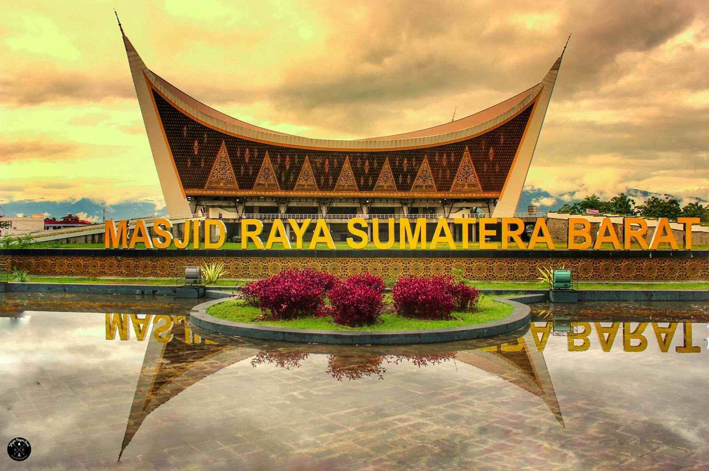

Sumatra Barat
Sumatra Barat terkenal dengan suku minang,dengan buadaya wisata alam yang masih alami dan tak kalah lagi makanan khasnya yang bukan menjadi rahasia umum lagi.

Sumatra Barat terkenal dengan suku minang,dengan buadaya wisata alam yang masih alami dan tak kalah lagi makanan khasnya yang bukan menjadi rahasia umum lagi.

Sumatra Barat adalah salah satu provinsi di indonesia yang dikenal dengan alam berbukit barisan.Jangan heran di sumbar masih menjadi lalu lalang harimau yang kini hampir punah. Sumbar yang beribukota padang ini sangat dikenal oleh masyarakat, terutama masih kentalnya suku adat minang yang murni peninggalan nenek moyang kita terdahulu.Suku minang adalah suku yang mempercyai garis keturunan itu diturunkan dari seorang ibu,sedangkan seperti yang kita ketahui garis keturunan itu berdasarkan ayah. Ini lah yang menyebabkan adanya perarturan adat gadis bersuku minang sangant tidak dianjurkan untuk menikahi laki-laki diluar suku minangkabau. Dan masih banyak lagi hal unik dari suku minang yang mungkin masyarakat tidak mengetahuinya. Suku minang sangat terkenal dengan masakannya yang lezat dan bersantan,masakan yang menggunakan rempah-rempah, dengan cita rasa pedas,asin,kari.Makanan yang sangat familiar adalah rendang,sambalado,gulai,dendeng,opor ayam,kari ayam dan masih banyak lagi.banyak perusahaan makanan diindonesia terinspirasi dari masakan minang. contohnya sambalado matah pada indomie,sambalado hijau pada indomie,dan masih banyak lagi.Dari segi budaya suku minang terkenal dengan tari piringnya dengan lihai memainkan piring tanpa khawatir terjatuh dan pecah,dan masih banyak lagi yang belum dikenal oleh masyarakat nusantara.Buadaya minang juga sempat di klaim oleh negara tetangga kita malaysia,brunei darussalam.mari jaga budaya kita karena jika bukan kita siapa lagi yang akan menjaga warisan nenek moyang kita.
RENDANG merupakan salah satu makanan khas sumatra barat tepatnya suku minang. Rendang sangat populer tidak hanya di indonesia tapi sudah manca negara tidak mungkin pencinta kuliner tidak mengetahui makan khas minang ini.

Rumah Gadang adalah rumah adat suku minang `terdiri dari tujuh gonjoang,sembilan ruang. Banyak hal tersirat dari rumah gadang ini hanya orang yang bersuku minang saja yang mengetahuinya,mungkin karena ini pula yang menjadikannya unik.
Tingkuluak patiak merupakan pakaian khas minang,tidak hanya itu ada juga suntiang yang dipakai untuk pengantin wanita. Dulunya dipakai untuk raja ratu terdahulu sedangkan tingkuluak patiak dipakai untuk penjaga raja dan ratu terdahulu.